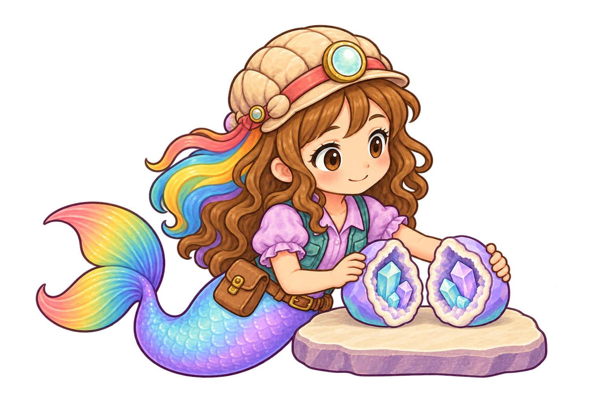
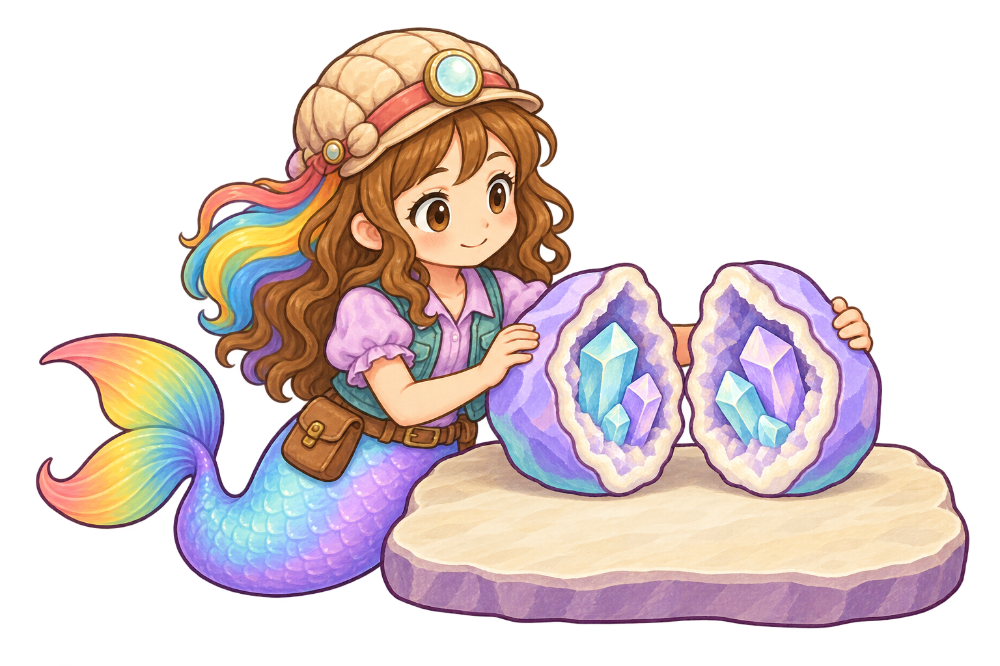

Job artwork library · Individual register
This drafts the missing Geologist work contact, currently 2.7/5 in the game. The second complete transparent source reaches 4.5/5 provisionally for the static pose, with material, identity and rooted-crystal semantics 4.6/5. It is unbound: complete opening, arrival, release and return still require real action review. No source pixels are combined with the live opening as a shortcut.

| Individual source or relationship | Draft score | Evaluation and next work |
|---|---|---|
| Painted character/material/identity | 4.6 | Current tan cap, cyan lens, teal/lilac costume and complete rainbow tail stay clear in broad painted values. |
| Rooted geode interior | 4.6 | Both cream cavity rims contain cyan/violet mineral groups. No crystal appears in a hand or as detached loot. |
| Practical work scale and support | 4.6 | Small specimen at waist level rests on the low stone; pose and prop agree in scale. |
| Near hand-to-shell contact | 4.6 | Connected fingers visibly brace the exterior without hiding the interior. |
| Far reach/contact | 4.5 | Arm lengths are plausible; a short section remains occluded by the shell. Confirm both anchors and clearance in actual work. |
| Complete static work source | 4.5 | Provisionally retain at the inclusive refinement floor. This single settled pose cannot establish continuous opening or live gameplay acceptance. |
| Current live working contact | 2.7 | Unchanged; Roshan still crouches beside the work. Never substitute the source score for the actual mounted evaluation. |
Material and rooted semantics are 4.6, but whole static pose 4.3, practical scale 4.1 and far reach 4.3. Chest-sized halves forced an excessive mostly hidden reach. Its original is preserved; the corrected candidate reduces the specimen/support and exposes a plausible shoulder-to-grip line.

Inventory, named gap and reference hashes · Rejected attempt review · Selected source review and exact hash · Executed built-in imagegen prompt. Originals and generator outputs stay separate; no protected book/voice/friend source changed. Target-device/child/owner, complete-action and all-job approval remain open.